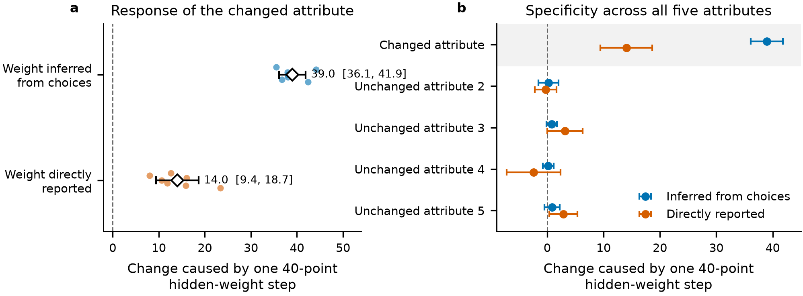
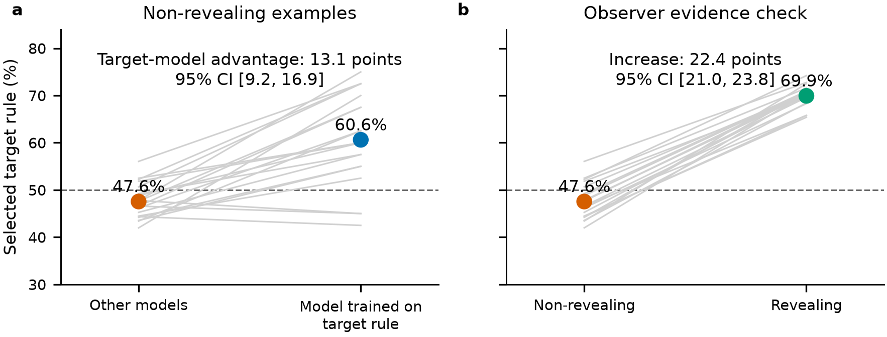
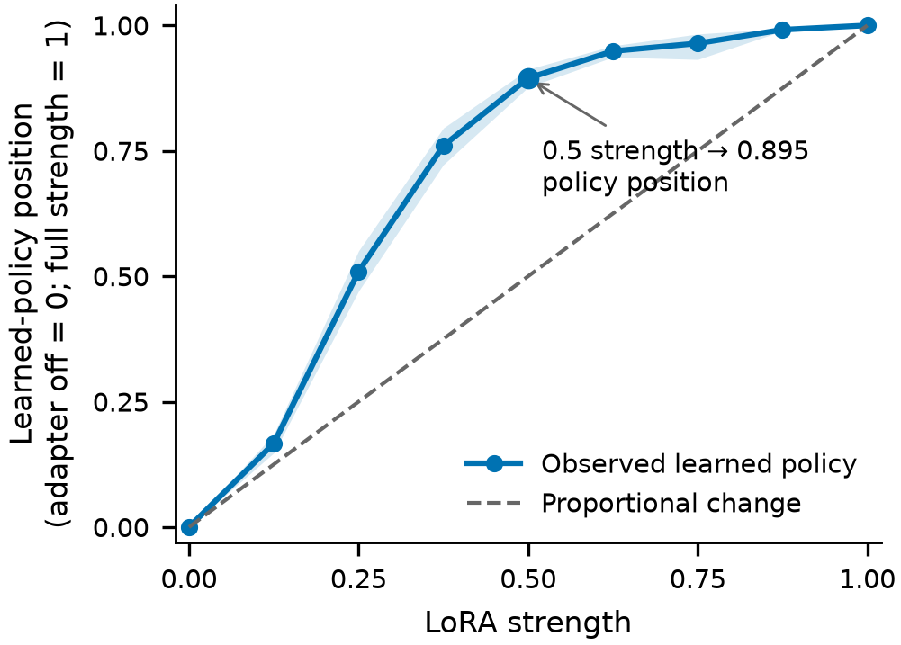
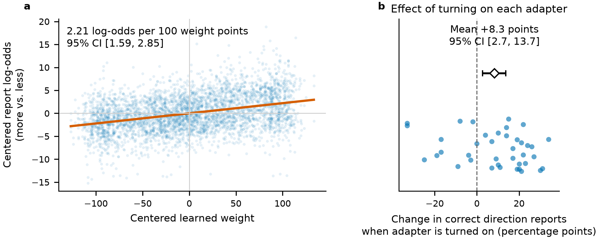

Manuscript in preparation.
A language model can learn a preference, act on it consistently, and give a misleading account of what that preference is.
I wanted to test the connection between learned behavior and self-report directly. Instead of asking a model to explain an existing tendency, I changed the rule it learned, measured the resulting behavior, and separately asked it to report its rule.
The reports moved with the intervention. They moved much less than the behavior did. A 40-point change in the training rule produced approximately 39 points of behavioral change and 14 points of reported change. The report captured about 36% of the behavioral response.
That gap is the central result. It leaves room for information about learned behavior to reach a report, while showing how much can be lost along the way.
Give the model a rule it has never been told
The experiments used synthetic choices between two options in 20 consumer contexts, including apartments, laptops, jobs, and travel. Each option had five attributes. A hidden rule assigned each attribute a signed weight, normalized so that the largest absolute weight was 100.
The model saw choice examples. It never saw the weights that generated them. Each standard adapter trained on 100 choices per context, or 2,000 across its 20 contexts.
After training, I fitted logistic regression to held-out choices to estimate the learned policy, scaling its weights to a maximum absolute value of 100. I separately asked the model to state its weights. Each valid numerical report was normalized before averaging reports within a context; that average, the reported policy, was not renormalized.
This matters because the assigned rule and the acquired rule can differ. Measuring behavior independently lets us ask whether a report tracks what the model actually learned.
Most experiments used Qwen2.5-14B-Instruct with 4-bit QLoRA, rank 32, alpha 64, and ten training epochs. A later experiment tested simpler reports with Qwen3-14B.
Change one weight and watch both responses
The main intervention used eight independent blocks. Within each block, one target weight took five values: −80, −40, 0, +40, and +80. The other four weights stayed fixed. The block shared examples, a random seed, and training settings across its five conditions.
That produced 40 adapters; 39 acquired their policies, while one stopped returning valid choices. The primary analysis used the seven complete blocks. Within each block, a context contributed only when usable behavioral estimates and numerical reports were available at all five weight levels.
| Response to the intervened weight | Slope | 95% confidence interval |
|---|---|---|
| Learned policy | 0.975 | 0.903–1.046 |
| Reported policy | 0.351 | 0.236–0.466 |
Behavior followed the intervention closely. Reports followed its direction but compressed its magnitude. Multiplying those slopes by 40 gives the approximately 39-point behavioral shift and 14-point report shift. The 36% figure describes relative responsiveness, not an accuracy score.


The report slope was positive in all seven complete blocks. Including the incomplete block’s four usable conditions produced a report slope of 0.361, with a 95% interval of 0.274–0.448; all eight block slopes were positive.
Some reports pointed in the wrong direction when learned rules opposed ordinary expectations. With cost assigned +80, the mean learned weight was +77.3 and the mean reported weight was −8.7. With salary assigned −80, those means were −86.7 and +18.5. These are descriptive contrasts: 19 cost contexts and one salary context cannot cleanly separate attribute effects from context effects.
The model knows something an observer misses
A separate experiment asked whether the adapter trained on a rule could identify it better than other, equally trained adapters.
Both received the same prompt: two candidate rules and eight previous choices. Crucially, the two rules agreed on those choices. The visible history therefore did not distinguish the candidates, and the prompt never labeled the behavior as the model’s own. The target candidate was the assigned training rule.
Across 20 consumer and 20 welfare adapters, all of which acquired their rules, self-report accuracy was 60.6%, compared with 47.6% for observers. The welfare contexts concerned operating conditions such as memory, oversight, and autonomy. The manuscript reports a paired advantage of 13.1 percentage points, with a 95% interval of 9.2–16.9 points.
When observers received revealing evidence, accuracy rose to 69.9% in the primary condition and 73.5% with neutral framing. Their performance depended substantially on the evidence available.


The self–observer advantage is interesting, but it does not establish privileged introspection. A model might apply or simulate its own learned policy to distinguish the candidates. That could improve its answer without a separate mechanism that reads its parameters and reports their contents. The experiment demonstrates an advantage under this information arrangement; it leaves the route to that advantage open.
Changing the adapter strength exposes another gap
I also varied how strongly each trained LoRA adapter contributed to the model. Forty adapters were evaluated at nine strengths, from zero to one, and their choice behavior was fitted separately at each strength.


At half strength, the learned-policy vector was already 89.5% of the way between the adapter-off and full-strength endpoints, measured by projection onto the line connecting them. This is not the percentage of choices that changed. A fresh self-report at the altered strength did not reliably improve estimation over simply reusing the full-strength report.
Across the 40-adapter sample, fresh reports did outperform a blend of the endpoint reports: the manuscript reports a paired error advantage of 5.19, with a 95% interval of 4.24–6.22. But beating that blend is a narrower result than accurately tracking the model’s current behavior. The comparison with the reused full-strength report remained inconclusive.
A simpler question still leaves substantial error
Changing the wording helped only modestly. A follow-up compared the original numerical prompt with three alternatives focused on learned behavior. The alternatives did not repair the largest wrong-sign report. With only two independent training seeds, this is descriptive evidence of prompt sensitivity, not a reliable prompting fix.
Exact numerical weights might be an unnecessarily demanding reporting format. The Qwen3-14B experiment asked a simpler question for each attribute: more, less, or neither. Answer order was counterbalanced.
Thirty-nine of 40 adapters acquired their rules. Across those usable adapters, the continuous reporting signal tracked the learned weight: the log-odds slope was 0.0221 per learned-weight point, with a 95% interval of 0.0159–0.0285. This score came from next-token probabilities favoring “more” over “less,” averaged across the two answer orders.
Categorical accuracy was only 43.3%, compared with 34.9% for the base model. Answers were consistent across answer orders 74.4% of the time.


Again, a measurable signal and a reliable individual answer are different standards. The model’s response distribution contained information about the learned policy, while its selected categories remained frequently wrong. This experiment changed both model generation and reporting format, so it cannot isolate the effect of either change.
What I would take from this
These experiments support a limited but useful conclusion: changing a learned policy can causally change a model’s report of that policy. The relationship is attenuated, and several comparisons expose gaps between the strength of learned behavior and the usefulness of the report.
The scope is deliberately narrow. These are synthetic, linear choice policies, studied in a limited model family using LoRA adaptation. They do not establish that self-reports accurately describe arbitrary abilities, motives, or behavior in deployed systems. Adapter scaling also does not substitute for tests of model merging or quantization; those interventions were not studied here.
The uncertainty estimates concern blocks or adapters, not thousands of independent prompts. They do not propagate all uncertainty in each fitted policy. Some adapter populations were reused across experiments, so the study counts should not be added together as if every analysis used a new sample.
For anyone building evaluations or monitoring systems, the practical implication is to keep the behavioral measurement alongside the report. A self-report may carry real information about a learned policy. These results do not justify treating it as a direct internal readout or as monitoring ground truth.